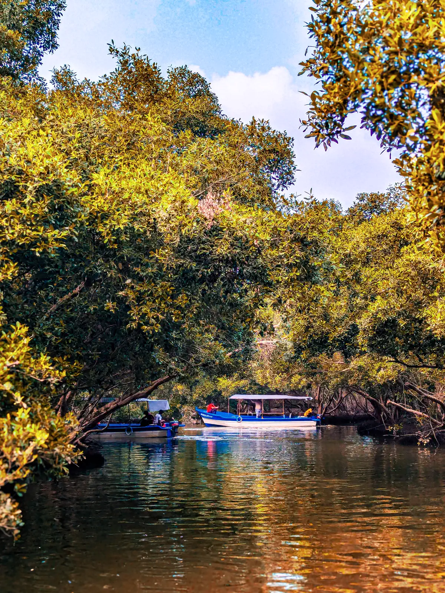
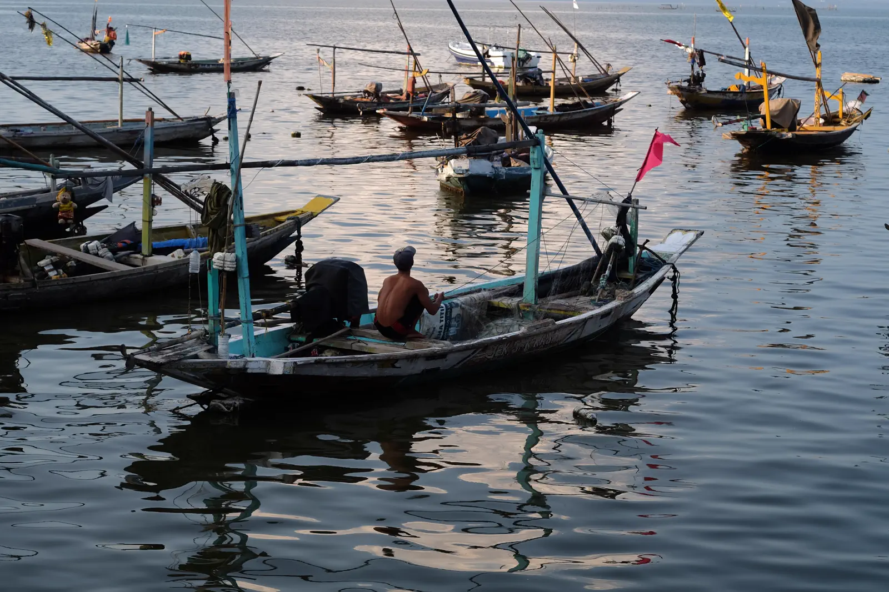

South Sumba is worth it: it is the area furthest from the two airports, the least equipped with tourist infrastructure, and for this very reason the most authentic. There are two very different faces there — the southwest coast, near Wanokaka, focused on surfing and fishing; and the southeast, around Melolo and Rende, known for its ikat weaving among the most famous on the island and its still wild river mouths.
Few independent visitors venture here unaccompanied — the distances are long and the roads sometimes difficult, but that's also what keeps the area preserved.
Beach of Tarimbang
Tarimbang is a long, unspoiled bay, known to surfers for its regular waves, and to all other visitors for its isolation - one of the least traveled areas of the island, far from the classic circuits of the West. Fun fact: it's located almost exactly in the middle of the south coast, equidistant from the West and the East, which explains why so few tours naturally include it. Little infrastructure on site: it is a stage in its own right rather than a simple stop.

Kampung Adat Praiyawang
Near the village of Rende in the southeast, Praiyawang is renowned for its megalithic royal tombs and some of the most sought-after ikat weaving on the island — some pieces produced here are of interest to collectors well beyond Sumba. A notable detail: some houses have their walls made of buffalo skins, offered during ritual ceremonies. The best weaving pieces are negotiated directly with the artisans, a way of supporting the local economy rather than buying in stores in Bali.
Melolo and the river mouth
Melolo is less a destination in itself than a convenient crossing point to Praiyawang — and to the river mouth where our wildlife observation boat trip takes place, including the locally documented population of crocodiles. According to a local belief, the island of Sumba is kept out of the waves by a chain thread suspended in the sky - this is why ikat weaving is traditionally only practiced in the East and West of the island, never in the Center.
Beach of Watuparunu
In the same area, Watuparunu combines crystal blue water, white sand and a large rock at the water's edge, which you can climb for an overview of the entire bay. One of the least crowded beaches on the island — sometimes only local fishermen for any company. If you prefer surfing to swimming, nearby Kalala Beach is renowned for its waves, some of the best on the island.
Village of Watu Hadang
Just next to Melolo, this village allows you to concretely understand the architecture of traditional houses: the pointed tower above the hearth serves as much a chimney as a social symbol. You can often attend a demonstration of yarn dyeing, the first step – rarely shown – of ikat weaving.

Associated service
Boat — river & wildlife observation
Mouth of Melolo, with mandatory guide and safety distance.
The South-West, near Wanokaka
At the other end of the area, the southwest coast around Wanokaka — not far from the famous Nihiwatu resort — is the starting point for our sea trips. It is a different region from the rest of the South: more oriented towards the ocean than towards the land.

Associated service
Sea fishing trip
Departure from the coastal villages of the South-West, near Nihiwatu.